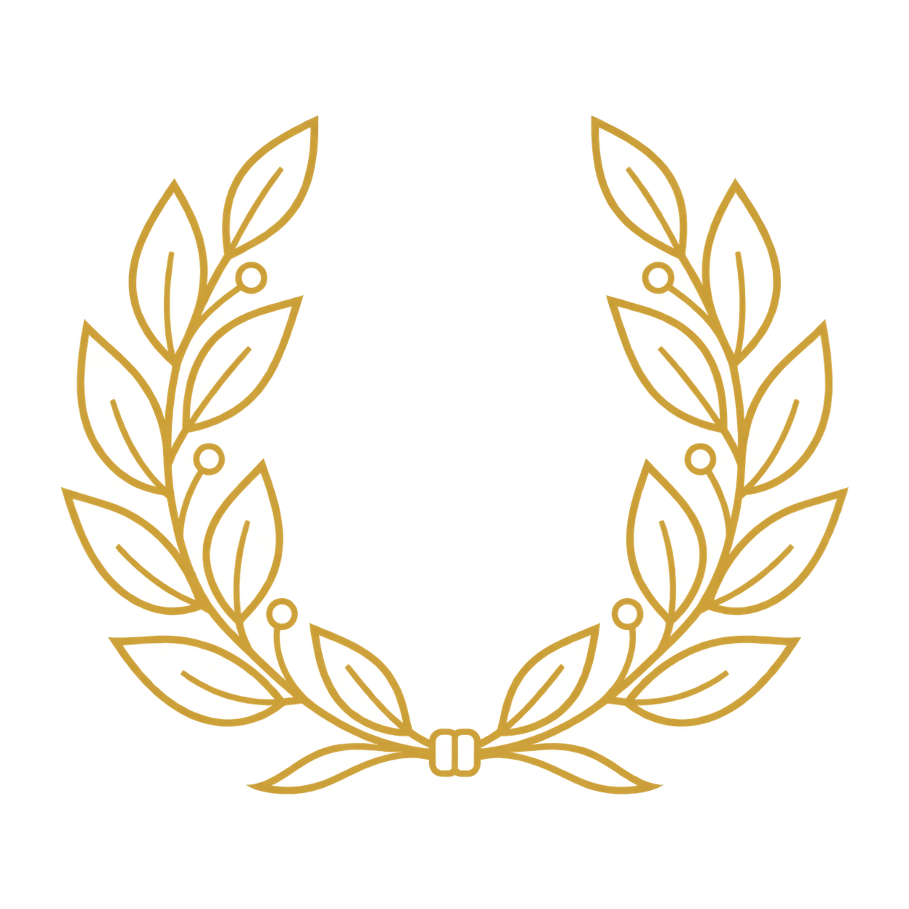

About the Chapter
Manhood, Scholarship, Perseverance, and Uplift. Rooted in Joliet since 1974.
Nu Pi Chapter
Chartered on March 9, 1974, Nu Pi Chapter is a graduate chapter of Omega Psi Phi Fraternity, Incorporated, serving Joliet, Illinois and the surrounding communities of the Tenth District. Nu Pi was the first African-American fraternity chapter founded in the southwestern suburbs.
In 1973 a group of men who lived in the city of Joliet, Illinois would see each other on the streets and of course, they would greet each other as fraternity brothers. Some had just moved to the city, while others were already living there. Joliet, Illinois at that time was a predominately blue collar town, consisting of Caterpillar, the Quarry and the prison industry.
The city had its share of racial issues dating back to the Joliet Riot after the death of Martin Luther King, Jr. Being an African-American professional man in the city at that time was not the norm. However, these brothers developed a very close bond based upon friendship, family and spirituality. In the latter part of 1973 their numbers had grown to 14 brothers coming from Alcorn, Philander Smith, North Carolina A&T, Tennessee State, Florida A&M, Tougaloo, Texas Southern, Grambling, Morris Brown and Wilberforce. These brothers truly believed and lived our creed of "Friendship is Essential to the Soul."
On March 9, 1974, the chapter was officially chartered at a ceremony where Burnell Coulon (Omega Chapter), 10th District Representative and a future Grand Basileus, and Marion Garnett, Grand Basileus of the Omega Psi Phi Fraternity, Inc. at the time, presided. The Nu Pi brothers elected their first chapter officers: John Greenwood, Basileus; Arnold Mitchell, Vice-Basileus; Willie L. Lewis, Jr., Keeper of Records and Seal; and Tillman Rosemon, Keeper of Finance.
The chapter was off and running by initiating their first line in 1975 and by establishing Pi Eta Chapter at Lewis University the same year at the request of Carlton Russell, the lone undergraduate Omega on campus. In order to bring the African-American community together, the chapter initiated the 3rd Friday's Gatherings at the Joliet Sheraton which became very popular in the 70's and 80's. Chapter members served on the boards of the NAACP, Friends of the Joliet Public Library, Forest Park Community Center, and the Rainbow Council of Boy Scouts.
In 1994 at the Conclave in Cleveland, Ohio, Brother Clevon Davis had his first conversation about reactivating Nu Pi Chapter with Ronald Hughes, then the 10th District Representative. In 1995, Nu Pi was reactivated. The first official meeting was held in the home of Brother Elvis Adams, where Brother Clevon Davis was elected Basileus, Brother Robert Ellis Vice-Basileus, Brother Harold Dell (Omega Chapter) Keeper of Records and Seal, and Brother Elvis Adams Keeper of Finance. That reactivation propelled Nu Pi into the next century.
This effort has increased the rolls of Omega by initiating over 180 new brothers into the fold. Through the fraternity's mandated programs, Nu Pi has participated in or sponsored Talent Hunts, Essay Contests, Achievement Week, Blood Drives, Health Fairs, Joliet Black Pride, Clothing and Toy Drives, Food Give-A-Ways, Scholarships, and mentoring programs. The Chapter hosted the District Meeting in 2009 and received the Chapter of the Year Award from the District in 2007 and 2009. Long live Nu Pi Chapter of the Omega Psi Phi Fraternity, Inc.
"Brotherhood is the very price and condition of man's survival."
Four men, one vision, 1911
Omega Psi Phi was founded on November 17, 1911, at Howard University in Washington, D.C., the first international fraternal organization founded at a historically Black college.
The Cardinal Principles

Manhood
Integrity, accountability, and character in all things.
Scholarship
The relentless pursuit of learning and academic excellence.
Perseverance
Steadfast commitment to purpose through every obstacle.
Uplift
Service that raises the whole community, not the few.
"Friendship Is Essential To The Soul."
The men who lead Nu Pi
Our elected officers guide the chapter's programs, finances, and fellowship. Names, terms, and photographs will be published as the chapter confirms the 2026-2027 slate.
ΝΠ Past Lines
Every brother initiated through the portals of Nu Pi Chapter, line by line, from the 1975 Charter Line through Spring 2026.
- David Kennerson
- Corey Tremble
- Ethan Edwards
- Kyle Fleming
- Shaundale Q Robinson
- Carnot Montout Jr
- Dion Gaines
- Corey Morrison
- Christopher Scott
- D'Marco Osborne
- Gerald Morrow
- Walter Lyons Jr.
- Bryan Chapman
- Chris Wilcher
- Kevin Fleming
- Kareem Butler
- Terrell Harris
- Alexander Peacock Sr.
- Terry Smith Jr.
- Brian Wilson
- Thomas Agnew
- Ramonde Williams
- Reese Robinson
- Jaylen Anderson
- Brandon Noland
- Jonathon Love
- DeAnte Howard
- DeMarco Hughes
- Jabari Saunders
- Antoine Hicks
- Ronald K. Nolen
- Torris Cochran
- KyJuan Tate
- Howard Rias
- Russell Stephens
- Northern Denson
- Marvin Lofton
- Eric Porter
- Bobby Simmons
- Sydney St. Hilaire
- Rich Rodriguez
- Rashad Davis
- Eric Wright
- Marquise Hughes
- Earl McKay
- Andre Harris
- Michael Vazquez
- Jerome Nesbary
- Mark Davis
- Edward Daniels
- Darrell Spencer
- Eddie Welch
- Defonda J Louie
- Dion Wilson
- Anthony Robinson
- Al Manigo
- Jason Underwood
- Ivan Simmons
- Rasheem Green
- Robert Siler
- Joseph Davenport
- Fred Blue
- Adewale Langston
- Wilbur Scott
- Melvon Foster
- Derrick Patterson
- Don A. Hoard Jr.
- Kermit Blakely
- Tartane Hutchinson
- Isaac Lambert
- Frederick Banks
- Marcus Hall
- Derrick Walker
- Michael Penn
- Phillip Taylor
- Roderick Robinson
- Anthony Gibbs
- Johnny Jones
- Damon Singleton
- Perron Thurston
- Kevin Iverson
- Sevin Hughey
- Elijah Maxey
- Michael Henderson
- Albert Brass
- Vincent Sykes
- Anthony Mason
- Russell Singleton
- Traneil Thomas
- Richard Wooten
- Marvin Hamilton
- Jason Bradford
- Ben Bryant
- Bernie Price
- Josh Roberson
- Derek J. Van
- Joseph Coney
- Kadesha Kirkman
- Pasquell Robinson
- Vincent Avery
- Rick Stewart
- Kendall Evans
- Jesse Jackson Jr.
- Monte Patrick
- Jeff Black
- Marcus Baker
- Omar Green
- Jeryl Major
- Gerald Reed
- Christopher Macklin
- Ricardo Spivey
- John Jackson
- Mario Mahome
- David Lee
- Johnny Tate
- Gerome Summers Jr
- Brian Caywood
- Shaun Reed
- Charles Owens II
- Herman Williams Jr
- Maurice Pinkney
- William Owens
- Adrian Griffin
- David Woods Sr
- Anthony Richardson
- Jeffery Walker
- Deleon Rainey
- Willie Spears
- Tony Ewell
- Michael Brooks
- Tony O. White
- James Alexander Jr.
- Carl Mayes
- Sidney Pennix
- Matthew Lewis
- Calvin D. Eskridge (Omega Chapter)
- Ronald Lynch
- Chris Suber
- Kevin Thomas
- Isaac Bracy
- Karl Blumenberg
- Michael Barron
- Andre Tillery
- Gregory Davis
- Milaun Brown Sr.
- Henry Waller
- Melvin Graves
- Charles Owens
- Steve Calhoun
- Terrell D. Anderson
- Paul Johnson
- Timothy Rubens
- DeVone Verse
- Michael Lyttle
- Ken Holiday
- Zel Hiram Wilson
- Roderick Walker
- Terry Bell
- William Rapier Sr.
- Gerald Dew
- Benjamin Billups
- Paul Richard
- Tommy Hatten
- Jerome Roberts
- Crawford Brady
- Johnny Harris
- John Kennedy
- Virgil McIntosh
- George Tyus
- Nathaniel Romeo
- David Bigsby
- Leslie Beavers
- Eugene McDaniels
- James Thompson
- Donald Johnson
- Joseph Wright
- Paul Downing
- Jonathan Johnson
- Kenneth Parks
- Ronald Johnson
- Edmond Francois
- Charles J. Kennedy
- Kenneth Freeman
Get Involved
Join the Brotherhood
Learn about membership in a graduate chapter of Omega Psi Phi.
Express Interest